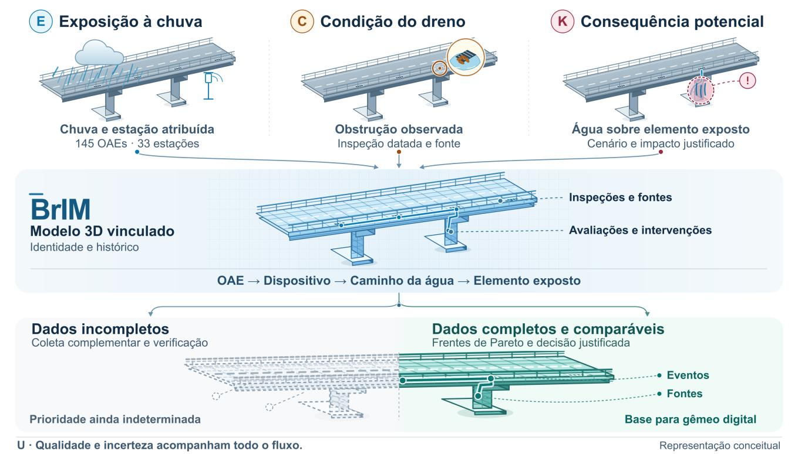
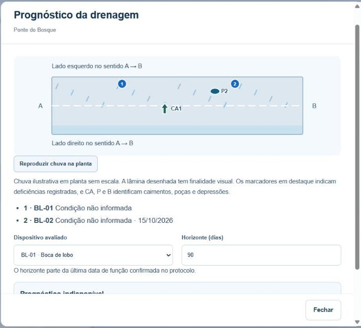
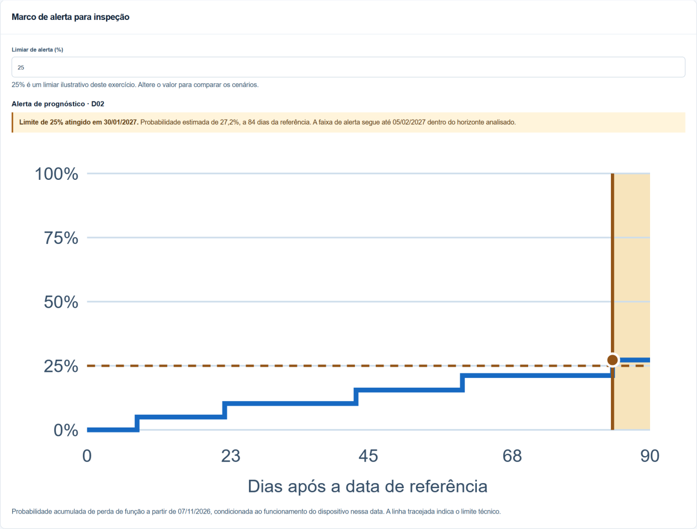

Apresentação final · 2026
Manutenção preventiva da drenagem de OAEs
Protótipo orientado a BrIM para priorização e prognóstico
01 / Revisão bibliográfica
O que a literatura estuda?
1.762 registros no corpus bibliométrico · 22 estudos na síntese focal dirigida
02 / Problema de pesquisa
O que acontece entre a chuva e a perda de função?
Exposição
A precipitação caracteriza a exposição atribuída à obra.
Condição
A inspeção registra como cada dispositivo funciona.
Consequência
O caminho da água ajuda a identificar elementos expostos.
Como vincular essas evidências em uma estrutura BrIM para apoiar a manutenção preventiva?
Artigo entregue · Seção 103 / Aplicação brasileira
Exposição à chuva no Espírito Santo
Nas cinco obras do piloto, a documentação consultada forneceu históricos insuficientes por dispositivo para avaliar o prognóstico em campo.
04 / Modelo informacional
O histórico acompanha cada dispositivo
E Exposição relativa à chuva
C Deficiência funcional observada
K Consequência potencial
U Qualidade e incerteza da evidência
E combina três escores obtidos com pesos iguais, entropia de Shannon e análise de componentes principais.

05 / Exercício na ponte de demonstração
Da inspeção à prioridade de manutenção
| Dispositivo | C | K | Frente |
|---|---|---|---|
| D02 | 2 | 3 | F1 |
| D03 | 1 | 2 | F2 |
| D01 | 0 | 1 | F3 |
O D02 ocupa a primeira frente por reunir maior deficiência e maior consequência neste cenário.
Abrir priorização no protótipo ↗
06 / Exercício de prognóstico
Quando a curva cruza o limiar de alerta?
27,2%
Probabilidade estimada de perda de função nos 90 dias seguintes, dado que o D02 estava funcional no dia 60.
Kaplan–Meier · 24 acompanhamentos simulados, com 11 perdas e 13 censuras à direita. O limiar ilustrativo de 25% foi cruzado após 84 dias da referência.
Abrir prognóstico no protótipo ↗
07 / Contribuição e próximos dados
Um histórico rastreável para a manutenção preventiva
Registrar
Vincular inspeções, evidências e intervenções ao dispositivo.
Priorizar
Documentar as frentes de manutenção e a origem de cada evidência.
Acompanhar
Atualizar estimativas e compará-las com novos registros de campo.
A exportação JSON preserva os vínculos e prepara a integração com sistemas de gestão, BrIM e gêmeos digitais.